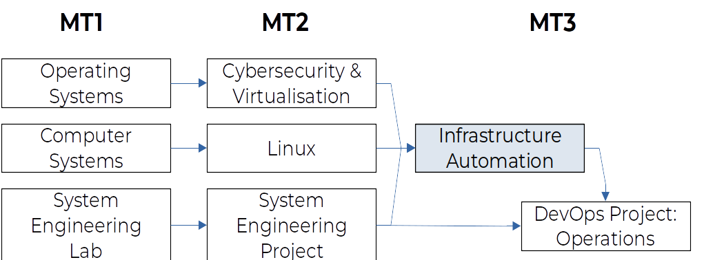

Infrastructure Automation
HOGENT applied computer science
Bert Van Vreckem
2022-2023
Intro
Wednesday 10 March 2021, 01:31
Inuits on-call team notices some VMs are gone
These are production systems!
They aren’t coming back any time soon…
Wednesday 10 March, 03:42
We have a major incident on SBG2. The fire declared in the building. Firefighters were immediately on the scene but could not control the fire in SBG2. The whole site has been isolated which impacts all services in SGB1-4. We recommend to activate your Disaster Recovery Plan.
— Octave Klaba (@olesovhcom) March 10, 2021
The situation
- OVHcloud is a cloud provider
- 32 datacenters over 4 continents
- a.o. in Strasbourg (SBG)


So, your servers are gone. Now what?
What happened?
- Probably a failed Uninterruptible Power Source (UPS)
- 3,6M websites, 464K domains gone
- Effect on businesses and governments
- No disaster recovery plan? Bye, bye data!
The situation at Inuits
- 130 VMs over 12 servers gone
- Most problems mitigated by automatic failover to other datacenters
- A few “problem cases”
Case 1
- VIP customer, failover fails
- Manual DNS record adaption needed for load balancer
- 1h lost: customer had to do a DNS record change themselves
Case 2
- Customer spread over 2 DCs
- Entire infrastructure reconstructed at other ISP before 9:00
- Without notification, customer would not have noticed anything…
Impact on Inuits
- No loss of data!
- Most problems solved before start business hours
What’s their “secret”?
- Infrastructure as Code
- Configuration Management
- Build pipelines for everything!
- Cloud native
- No owned HW
- Multi-cloud, cloud-agnostic
- High Availability by design
References
- Buytaert, K. (2020-06-17) Help, my datacenter is on fire!. StackConf 2021. https://youtu.be/zDfH0DpHT3s
- Rosemain, M. & Satter, R. (2021-03-10) Millions of websites offline after fire at French cloud services firm. Reuters
- Witteman, E. (2021-03-15) OVH fire may be caused by faulty UPS
Infrastructure Automation
Infrastructure Automation
Also called:
- Infrastructure as Code
- GitOps
- DevOps
Server life cycle
What are the different phases in the life of a server(-VM)?
Tooling (1/3)
Tools for server lifecycle management:
- Provisioning: empty machine → JEOS
- Packer, Docker, …
- Configuration Management: JEOS → production-ready
- Ansible, Puppet, Chef, CFEngine, SaltStack, …
Tooling (2/3)
- Software Delivery/Release engineering
- CI/CD: Jenkins, Travis CI, Circle CI, Gitlab CI, Github Actions, …
- Packaging: rpmbuild, dpkg-deb, fpm
- Package mgmt: RPM, deb, npm, RubyGems, pip, Helm, Chocolatey, NuGet, …
- Repository management: Pulp
Tooling (3/3)
- Orchestration: manage systems in production
- Ansible, SaltStack, Kubernetes, …
- Monitoring:
- Traditional: Icinga, Nagios, …
- Time Series DB: Prometheus, collectd, Cacti, …
- Logging: Elastic stack, Splunk, Fluentd, …
Study Guide
Study Guide
See Chamilo course for detailed info!
Course within the curriculum

Learning goals and competencies
- Configuration Management Systems
- Ansible
- Setting up reproducible virtual environments
- Vagrant, Docker, Docker-compose
- CI/CD: Jenkins
- Orchestration
- Ansible, Docker-compose, (Kubernetes)
- Monitoring, logs
- Cockpit, Portainer, journalctl
Remark: 2021-2022 is a transition year!
Course contents
- Intro, setting up a work environment
- M1. Continuous Integration/Delivery
- M2. Configuration management
- M3. Container orchestration
- M4. Monitoring
Learning materials
- Start with the overview in the Chamilo course
- Github: lecture slides, demo environment, lab assignments
- Online manuals of software used
- Video recordings of classroom instruction (Dutch)
- (Books - see study guide on Chamilo)
Software needed
PS> choco install git
PS> choco install vscode
PS> choco install virtualbox
PS> choco install vagrant(Mac, Linux: see study guide on Chamilo)
Software (continuation)
- VSCode: install recommended plugins (see study guide)
- VirtualBox: Extension Pack!
- Git client: also install Git Bash!
Teaching methods
- Classroom instruction, demonstration
- Lab assignments
Class sessions
- Code green: on-campus, see class schedule
- Code yellow/orange/red: on-line, Teams session
Tutoring
- Individual guidance for lab assignments
- Ask questions during class sessions
- Outside class: general Teams channel
- Only for personal questions: e-mail/Teams chat
Semester schedule
- intro, Software install, M1. Continuous Integration/Delivery
- (continued)
- M2. Configuration management
- (continued)
- (continued)
- (continued)
Semester schedule
- M3. Container Orchestration
- (continued)
- (continued)
- M4. Monitoring
- (continued)
- Troubleshooting-lab 2
- Optional: catch-up session
Assessment
- Portfolio:
- Github repo with source code and reports
- Demonstrations:
- During the semester (at least 3x)
- End result (exam period or W13)
Resit
Personal assignment, no support
- finish lab assignments
- extra assignment (Chaos Engineering)